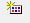
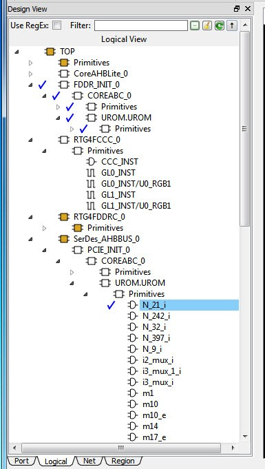

9.6 Floorplanning Using Chip Planner
(Ask a Question)Floorplanning includes creating regions and making logic assignments to those regions. It is an optional methodology to improve the performance and routability of your design. The objective in floorplanning is to assign logic to specific regions on the chip to enhance performance and routability.
When floorplanning, you analyze your design to see if certain logic can be grouped within regions. Placement regions are especially useful for hierarchical designs with plenty of local connectivity within a block. If your timing analysis indicates several paths with negative slack, try grouping the logic included in these paths into their own regions. This forces the placement of logic within the path closer together and may improve timing performance of the design.
Use floorplanning to create Design Separation Regions for security-critical designs. For Microchip’s Design Separation Methodology, all logic should be contained in a logic placement region with dedicated Place and Route resources. For details, see the Design Separation Methodology User Guide .
Use Chip Planner before and after running layout to help you floorplan. You can:
- Create Regions
- Move, resize, merge, or delete regions
- Assign logic to region
- Assign nets to regions
9.6.1 Types of Regions
(Ask a Question)Three region types can be created for floorplanning purposes:
- Inclusive region
- Exclusive region
- Empty region
9.6.1.1 Inclusive Region
(Ask a Question)In an inclusive region, the Place and Route tool places unassigned logic within its boundary. It can contain macros, both assigned and unassigned to region. Routing resources within an inclusive region are also not restricted. Logic that is placed prior to region creation is not unplaced from the region.
Use the Create Inclusive Region icon  to create an inclusive region.
When a region rectangle is created, you can assign logic macros, net macros, and port macros to it from the Design View window.
9.6.1.2 Exclusive Region
(Ask a Question)In an exclusive region, the Place and Route tool does not place unassigned logic within its boundary. It can contain only macros already assigned to the region before the region is created. However, routing resources within an exclusive region are not restricted.
Use the Create Exclusive Region icon to create an
exclusive region: 
When a region rectangle is created, you can assign logic macros, net macros, and port macros to it from the Design View window.
If an exclusive region rectangle is created over placed macros, the locked macros already inside the exclusive region will not be unplaced. They are automatically assigned to the region. If the macro is placed but not locked, the macros will be unplaced from the locations and will not be assigned to the exclusive region.
9.6.1.3 Empty Region
(Ask a Question)In an empty region, neither the user nor the Place and Route tool can place any logic within its boundary. However, routing resources within an empty region can be used by the Place and Route tool.
You cannot assign logic macros, net macros, or port macros to an empty region.
9.6.2 Creating Rectilinear Regions
(Ask a Question)To create a rectilinear region for floorplanning:
- Click the region icon: Empty/Inclusive/Exclusive.
- Go to the Floorplanner View and click at the location where you want to create a region.
- Drag the mouse diagonally to draw a rectilinear shape for the size of the region you want. The region is named UserRegion1, 2, 3, and so on by default for Inclusive and Exclusive Regions, and EmptyRegion1, 2, 3, and so on by default for Empty Regions.
- (Optional) Right click and select Rename to rename the region from the default name to a different name.
- Click Commit to save the changes.
The floorplan.pdc file is updated with the “define_region” PDC
command to reflect the new user region you
create.
define_region -name EmptyRegion3 -type empty -color 2143322112 648 225 659 227
define_region -name UserRegion1 -type inclusive -color 2147442270 552 300 731 311For details about PDC commands, see the PDC Commands User Guide (SmartFusion2, IGLOO2, RTG4 or the PDC Commands User Guide (PolarFire).
The Properties Window displays the properties of the region you created.
9.6.3 Creating Non-Rectilinear Regions
(Ask a Question)By default, a region is created with a rectangular area. However, you can also create a non-rectilinear region by merging two or more rectangular regions.
- Use inclusive or exclusive region constraints if you intend to assign logic to a region. An inclusive region constraint with no macros assigned to it has no effect. An exclusive region constraint with no macros assigned to it is equivalent to an empty region.
- A user region in which there are macros assigned to it is identified by a vertical
and horizontalcheckered-board pattern:
- A user region without any logic assigned to it is identified by a diagonal hash line pattern:
9.6.4 Assigning Components/Macros to Regions
(Ask a Question)To assign components or macros to a user region:
- Right click the component or macro in the Logical View and choose Region Assign. A dialog box opens for you to select a user region.
-
Click Commit to save the changes.
Alternatively, you can drag-drop the component or macro from the port, Logical View, or net onto a user region in the Floorplanner View.The component or macro assigned to the region is identified by a blue check mark:

Figure 9-45. Macro Assigned to a User Region The Log window prints the message that PDC files are updated/written to reflect the changes you have made in Chip Planner.
The
floorplan.pdcfile is updated with the assign_region PDC command:define_region -name UserRegion1 -type inclusive -color 2147442270 552 300 731 311 assign_region UserRegion1 FDDR_INIT_0For details about PDC commands, see the PDC Commands User Guide for PolarFire FPGA and the PDC Commands User Guide for SmartFusion2, IGLOO2, and RTG4 .
9.6.5 Routing Inside a Constrained Region
(Ask a Question)By default, when a region is first created, the region properties (Inclusive/Exclusive/Empty) apply to design resources (Placement) only. The Place and Route tool is free to use the routing resources inside the region. To further constrain the Place and Route tool on routing resources usage inside the region, click the Constrain Routing check box in the Properties window.
9.6.5.1 Constrain Routing
(Ask a Question)This option applies to all types of regions: inclusive, exclusive, and empty.
When this check box is checked, the region constraints are applied to routing, in addition to placement. The routing behavior is summarized in the following table for each type of user region.
| Region Type | Routing Behavior |
|---|---|
| Inclusive |
|
| Exclusive |
|
| Empty |
|
9.6.6 Empty Region General Guidelines
(Ask a Question)Empty regions allow you to create exclusive areas on the device where no logic placement can occur. Empty regions help guide the placer to pack your logic closer together and thereby use more local routing resources to connect it. You cannot create empty regions in areas that contain locked macros. Use the following guidelines for empty regions.
9.6.6.1 Use Empty Regions to Guide the Place and Route Process
(Ask a Question)If your design does not completely use up your target device (for example, 60% utilization or lower), use empty regions to cluster your logic placement into specific subareas of the chip. This helps when you have originally placed-and-routed the design into a smaller device but want to fit it to a larger part while still preserving the performance you have achieved in the smaller device.
9.6.6.2 Use Empty Regions to Reduce Routing Congestion
(Ask a Question)Creating empty regions next to the congested area(s) of your design helps reduce congestion. When you place an empty region next to congested logic blocks or regions, the placer cannot place any logic next to your region or logic block. Logic which would normally be placed there is forced to be placed somewhere else. Routing resources next to the congested area are freed up and provide the router more options to route signals into the congested block.
Before deciding to place empty region(s), analyze your design for congestion areas. Use the Ratsnest view in Chip Planner to see dense areas of connectivity into and out of your logic blocks or regions. Create empty regions in these congested areas and see it if improves the routability of your logic.
9.6.6.3 Use Empty Regions to Reserve Device Resources
(Ask a Question)If you want to preserve the placement of your existing design but plan additional modifications in the future, create empty regions in the areas of the chip where you plan to add additional logic. As you add new logic, remove or resize your empty regions accordingly to fit your new logic. Empty regions placed over I/O pins reserve them for future use as the I/O needs of your design changes. There are some restrictions for using empty regions in this manner.
9.6.7 Overbooking of Regions
(Ask a Question)Overbooking of regions (assigning resources over 100% utilization) is not allowed. When you try to overbook a region, Chip Planner shows the overbooked resource type in the Properties Window of the Region and the resources are not assigned to the region. The overbooked resource is highlighted in red in the Region Properties window as shown in the following figure.
9.6.8 User Action in Regions in the Floorplanner View
(Ask a Question)When you select a region on the Floorplanner View, you may see some of the following options:
- Rename Regions
- Delete Regions
- Merge Regions
- Unassign macros from Regions
- Assign Macros inside Region
- Clone Region
- Unassign All
- Unassign Selected Nets
- Unassign Selected Components
- Unassign Selected Ports
- Macro Manipulation Mode
- Region Manipulation Mode